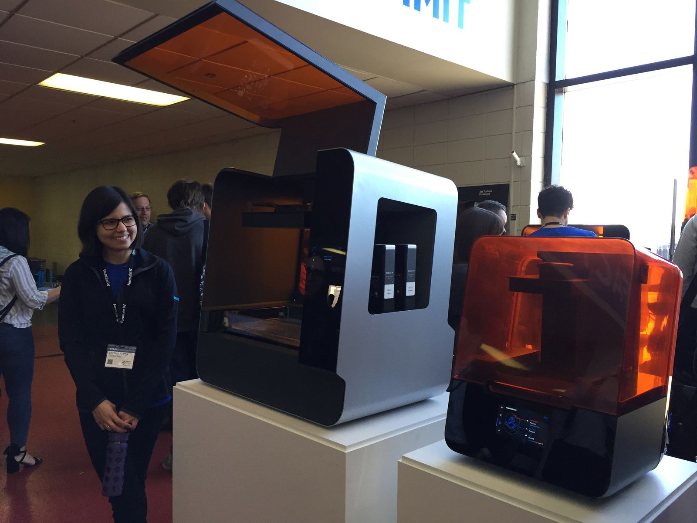
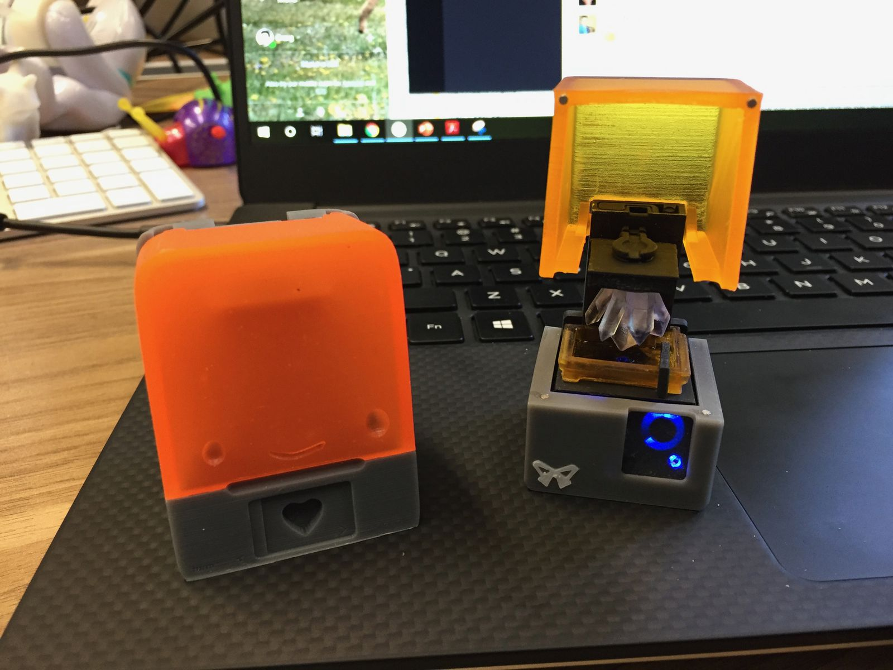
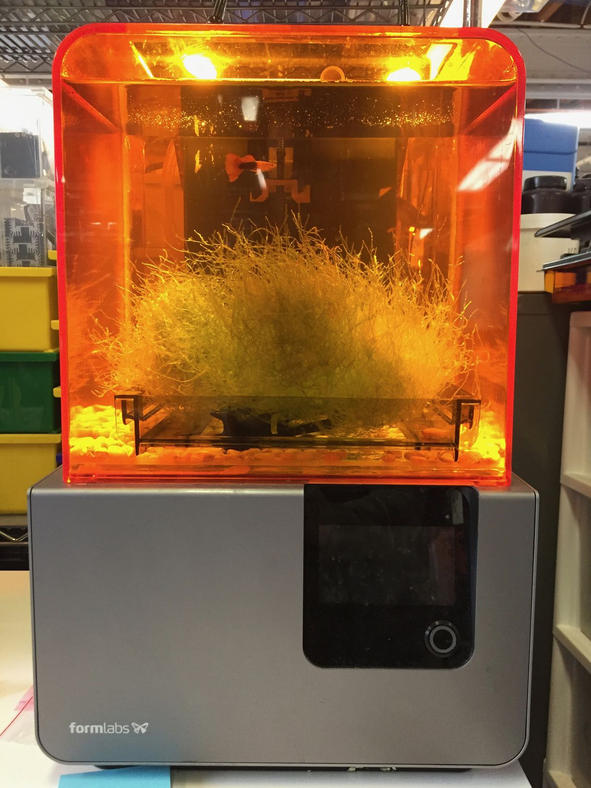
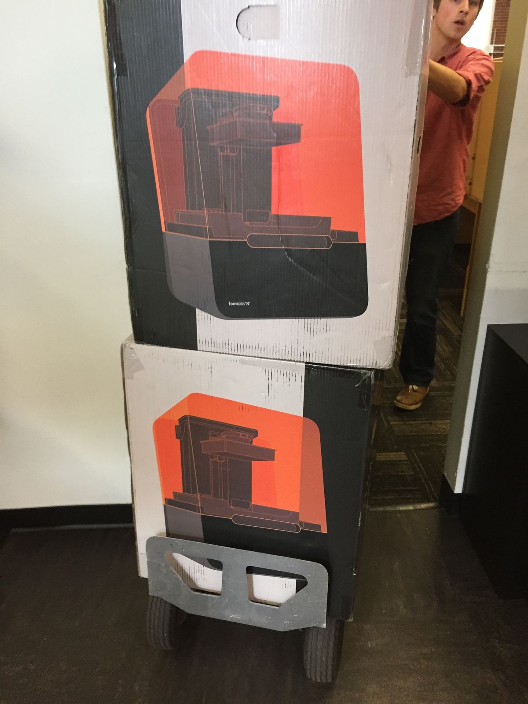

Two weeks in
Yesterday ended my second week back at work after eight weeks away. It coincided with my first twelve hour workday since my return. Up until then, I had been pretty good at leaving the office at a regular time. (If I left the office before 5:10, I could make the earlier evening yoga class—the later one gets me home for dinner after 9). I still don't have a project to work on just yet, though I'm getting closer.

Perhaps I should back up a bit. On my first week back, I had two days of conferences at the seaport. The first, called the Digital Factory, brings "together CEOs, CTOs, and manufacturing leaders at our day-long executive summit". I refer to these people as our "customer's bosses". Some of the talks were quite interesting, and the Formlabs CEO laid out a good vision for our company, explaining why our new product releases are in line with that vision. The next day was the Formlabs User Summer, where we bring together our customers to learn from them and share how people are using our products. Generally I find this day more fun, as I get to meet with the people who love using our printers and can share their feedback. It was great to see the person who makes the BabyForm2, whom I had met at the previous user summit in 2017. It was also great to see so many coworkers and former coworkers who were at the conferences.

Armed with a Moleskine notebook and a pen, I furiously began taking notes on my observations, hoping to inform what I should be working on next. With a fresh perspective from eight weeks of no work whatsoever, I wrote down the feedback of customers and ideas from the talks. More interestingly, I could get first impressions of the Form 3 and understand what aspects of the machine got people excited and what didn't.
My Moleskine followed me to the office, where I spent much of my time talking to various people about what's changed since I left, what's going well, what isn't going well, and how I can best help. I ended up pulling on more threads than I originally expected, filling up nearly half the notebook in less than two weeks.

Most people I talked to were pretty busy—a concept that I had basically forgotten about—so I found myself with a decent amount of downtime. I filled some of that time by running comparison prints between the Form 2, the Form 3, and what our testing engineer said is our strongest competitor in terms of print quality. Essentially, this means that I printed a lot of snails.

So what kept me at the office for twelve hours last night? A few things. I was running more comparison prints using the Form 3 and I was printing a few hybrid snails using elastic and rigid resins. Lastly, I was assigned a small task (just before 5pm) to develop a small part to help with wire routing for a project. As vacuum forming is one of my favorite fabrication techniques, I thought that I would get started right away. I quickly whipped up a design that meets the requirements and started a print of 5 prototypes using durable resin on the Form 2—my Form 3 was occupied at the time.
Come end of day Monday, I should have a better idea of what project I'll be working on next. Based upon my eagerness to get to work on this small wire routing flap, I'm ready for more.